El Big Bang
Animación artística · ESO / M. KornmesserLos primeros minutos del universo
Hidrógeno y helio, con una pizca de litio.NASA / Hubble
El origen de los elementos
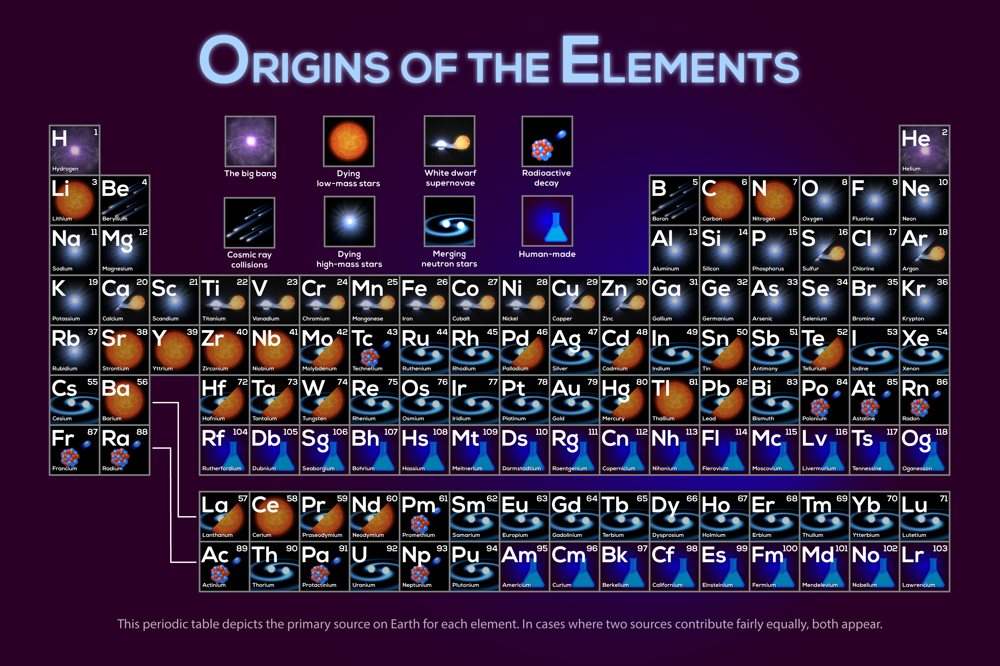
Big BangEstrellas de bajamasa al morirExplosiones de
enanas blancasDesintegración
radiactiva Choques de
rayos cósmicosEstrellas masivas
al morirFusión de estrellas
de neutronesSíntesis
en laboratorio
El oxígeno del agua se formó en estrellas masivas.NASA’s Goddard Space Flight Center (2021) · Datos de J. Johnson
Seis elementos para la vida
Big BangEstrellas de bajamasa al morirExplosiones de
enanas blancasDesintegración
radiactiva Choques de
rayos cósmicosEstrellas masivas
al morirFusión de estrellas
de neutronesSíntesis
en laboratorio
Hidrógeno · Carbono · Nitrógeno · Oxígeno · Fósforo · AzufreNASA’s Goddard Space Flight Center (2021) · Datos de J. Johnson
El futuro de la Tierra
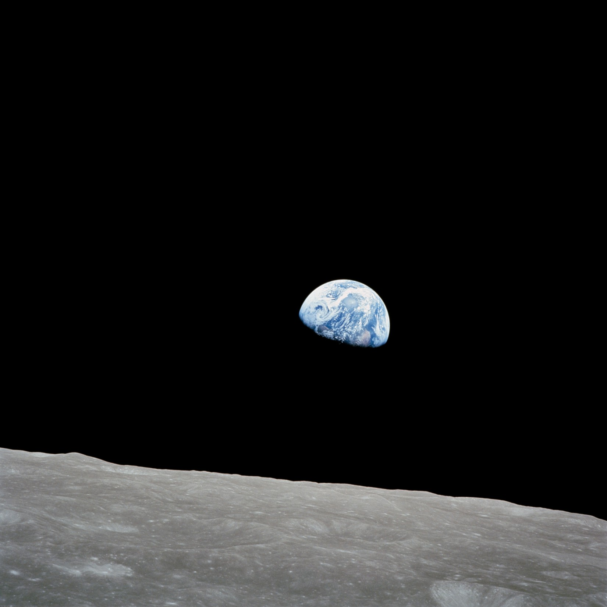
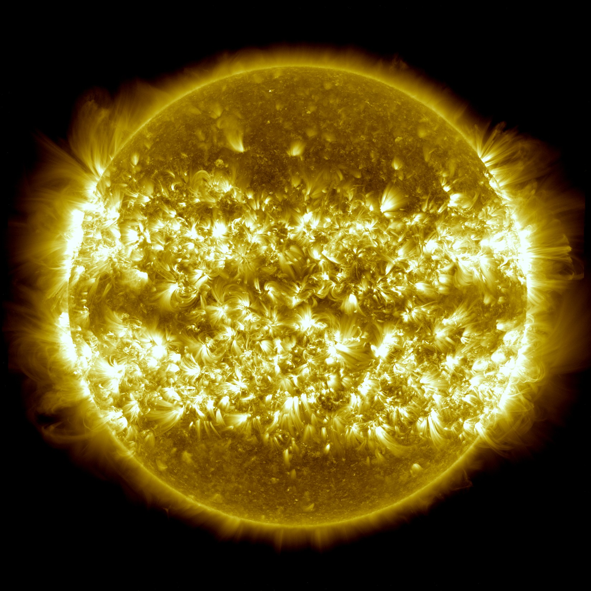
El Sol de hoy
La luz nace en el núcleo
En su centro, el hidrógeno se transforma en helio y libera energía.
NASA · El SolEl Sol y las órbitas
El Sol se hará gigante
Mercurio y Venus quedarán dentro. Algunos modelos incluyen también a la Tierra.
Schröder y Smith (2008)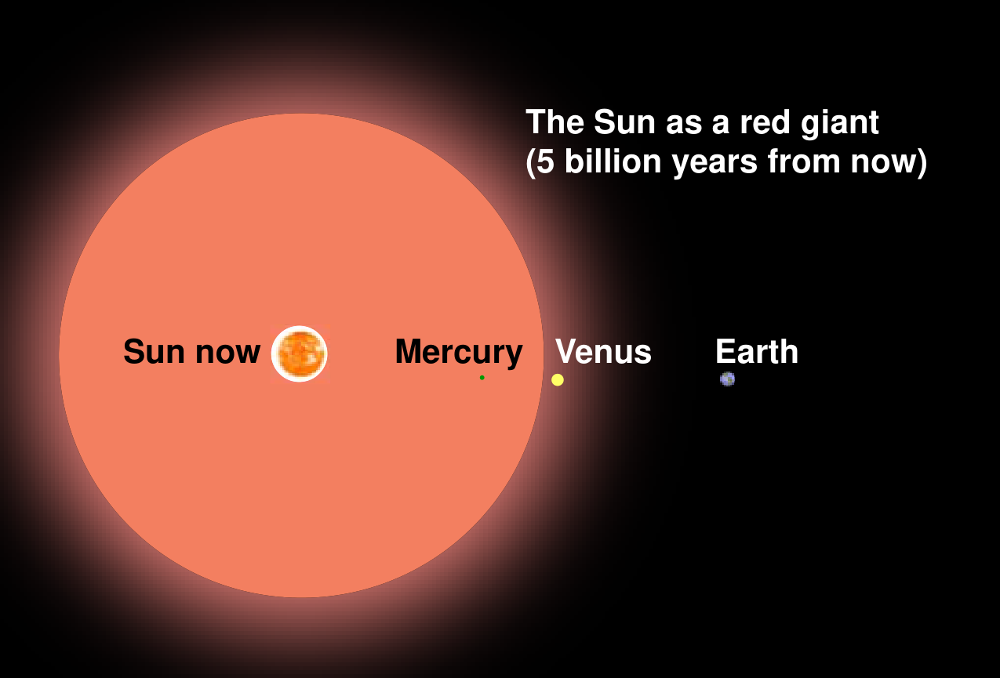
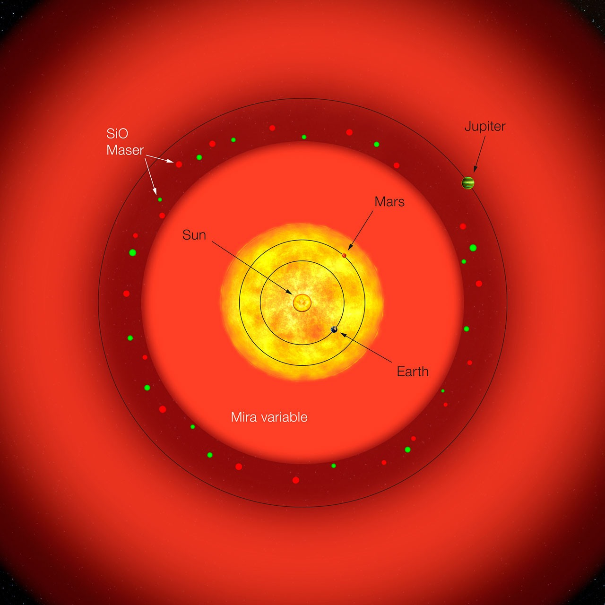
Otra gigante para comparar
Una estrella del tamaño de la órbita de Marte
Así se vería S Orionis en el lugar del Sol.
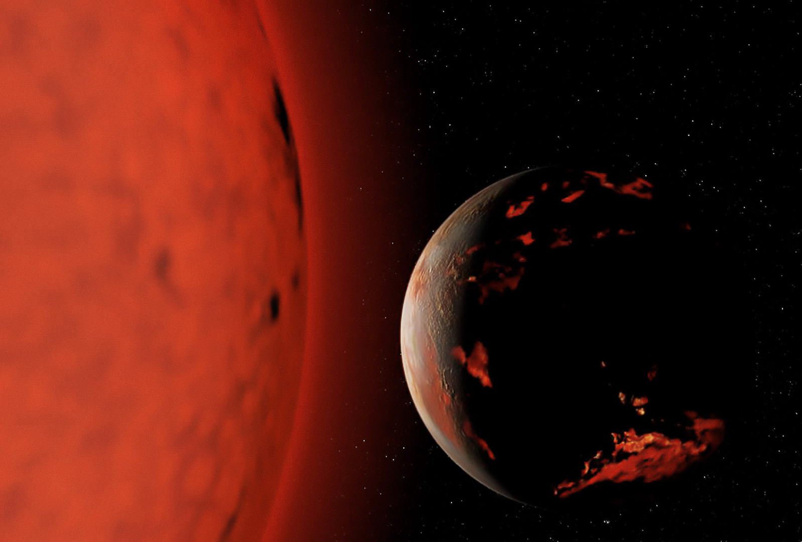
El último atardecer
Interpretación artística · Fsgregs · ESO SupernovaEl Sistema Solar, en cámara rápida.
Animación artística · ESA/HubbleM. Kornmesser y L. L. Christensen
Nebulosa de la Hélice
El núcleo al descubierto
Ese punto es una enana blanca. También el Sol dejará un núcleo de carbono y oxígeno que él mismo habrá fabricado.
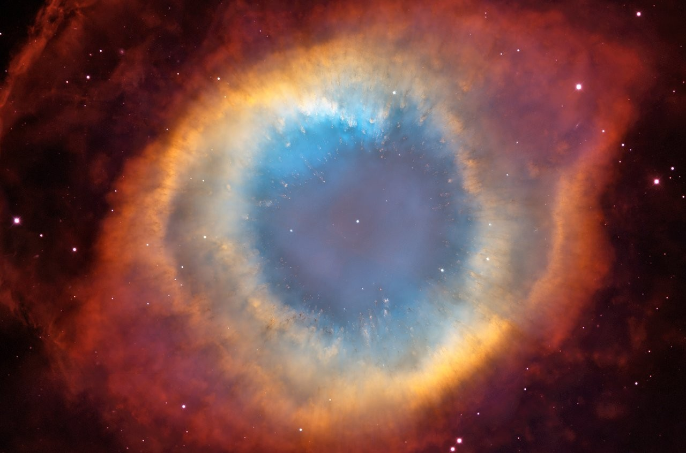
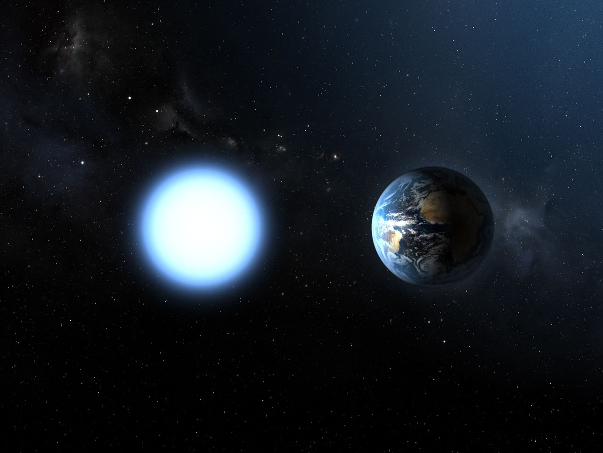
Sirio B es del tamaño de la Tierra
Izquierda, Sirio B · Derecha, la TierraComparación artística de tamaños · ESA y NASA
Un planeta que sobrevivió
Y aun así,
algo sigue dando vueltas.
Un gigante parecido a Júpiter orbita una enana blanca.
MOA-2010-BLG-477Lb · Blackman et al. (2021)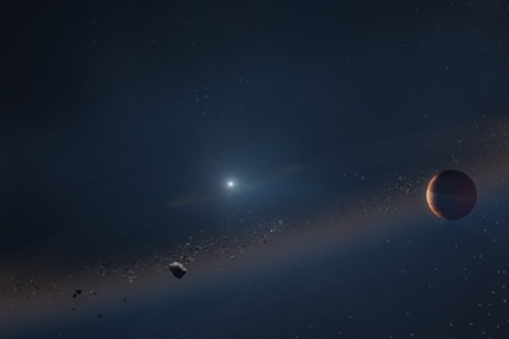
De las estrellas al espacio
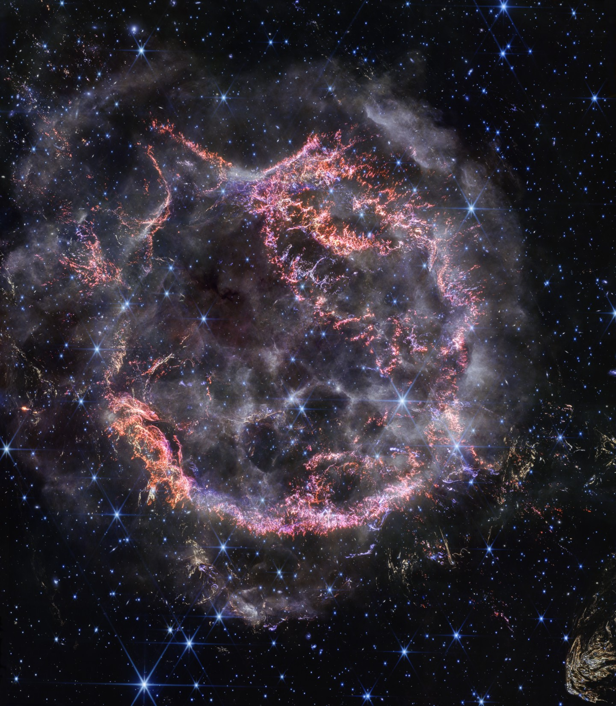
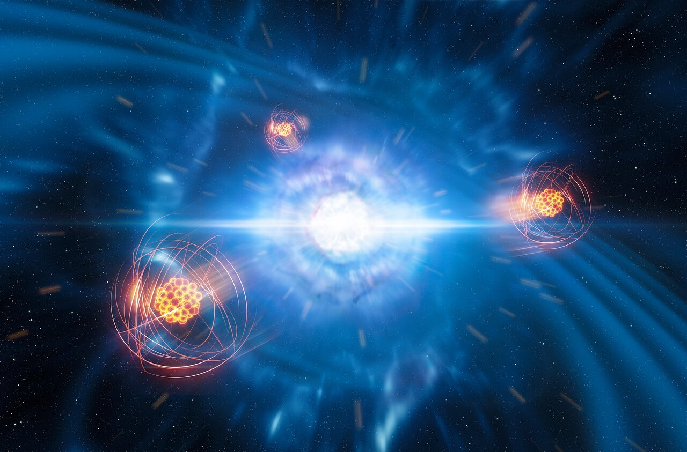
De una gigante roja al verde de la feria
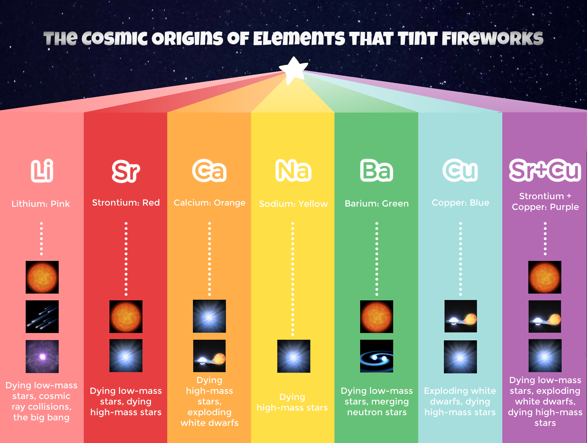
LitioEstroncioCalcioSodioBarioCobreEstroncioy cobre
Estrellas de baja masa aportaron parte del bario (Ba) que da el verde.NASA’s Goddard Space Flight Center (2021)
El Sol heredó su hierro
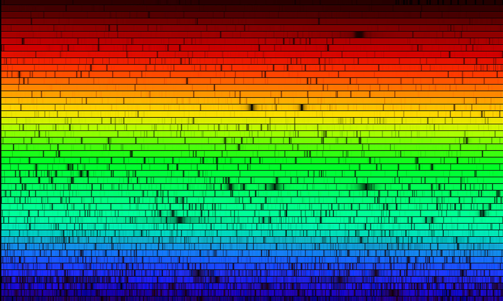
Lecturas y créditos